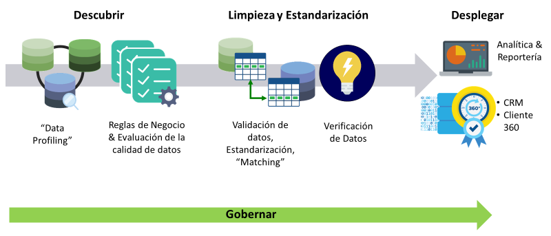

La solución de la calidad de datos, consiste en:

Descubrir
Acceder datos en cualquier parte de su organización y evaluar su exactitud y completitud
• Identificar orígenes de datos fuera y dentro de la organización
• Descubrir defectos en los datos y relaciones a través de las diferentes bases de datos
• Analizar métricas que comparen datos frente estándares expresadas como: metadatos, lógica definidas , o estándares de industria
Limpieza y estandarización de datos
Aplicar rutinas de limpieza de datos, validaciones, procesos de enriquecimiento ya sea preconstruidas o customizadas para los datos globales de la organización
• Acceder, preparar, limpiar y estandarizar datos.
• Añadir información faltante: códigos postales, datos geolocalizados y otros datos referenciados
• De duplicar registros, crear households.
• Enlace entidades tales como: clientes, productos, productos, proveedores en una vista unificada.
Desplegar
Diseñe una sola vez y despliegue en cualquier parte de su organización:
• Desplegar rápidamente la calidad de los datos en tiempo real o en lote en toda la empresa en ciclos cortos de duración de no más de 60 días
• Desplegar en la nube o en las instalaciones locales de la organización
• Conecte Trillium con software propietario de su organización aplicaciones de terceros vía estándares API’s
Gobernar
Empodere a usuarios claves con actividades de administración y monitoreo de la calidad de datos
• Modifique y cree reglas de negocio, reportes de calidad de datos desde una interfase basada en browser.
• Comparta reportes pre construidos, scorecards y dashboards a los administradores de calidad de datos y a los equipos de gobierno de su organización.
Solamente el 35% de ejecutivos senior tienen un amplio nivel de confianza en la exactitud de sus proyectos de Big Data Analytics.
El 92% de los ejecutivos están conscientes del impacto negativo de los datos y analítica en la reputación corporativa.
El costo de calidad de datos baja llega a niveles del 50%(Gartner).
El 84% de los ejecutivos de las empresas están preocupados por la calidad de los datos.
Convierta su data lake en una única vista confiable de sus clientes y sus productos.
Potencie sus rutinas de analítica avanzada y machine Learning con datos confiables y adecuados.
Obtenga “insights” que provienen de grandes volúmenes de datos y genere acciones comerciales.
Implemente procesos de calidad datos a gran escala y cumpliendo normas estándares mundiales .